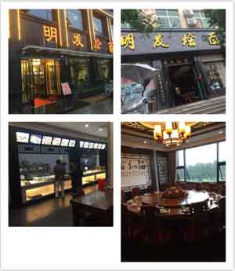

凭借七峰山门票在七峰山生态旅游区主峰超市购物满20元即可抵现金2元。 在这里，你除了可以买副食百货，还有方城特色纪念品、方城特产，均参与活动哟。
凭借七峰山门票在七峰山生态旅游区周围农家乐住宿享受6.6折优惠。美丽乡村——杨集乡磨沟村农家乐：在这里，你可以体验到最古朴的民情风俗，品尝到特色山珍野味，享受到温馨的住宿环境。以下有农家老板的联系方式，您可以在出行前先咨询预定哦。
来到方城旅游，肯定要尝一尝方城最具特色的美食——方城烩面。别小看了这碗面，人家可是上了央视美食推荐的“主儿”。 以下七峰山给大家准备了两家方城烩面界的大咖级商家： 烩面传奇 游方城七峰美景，品方城烩面传奇！ 方城烩面经营宗旨：以真材实料优质食材为主导，以方城味道经典烩面为主题，以家常特色农家菜为主理，倾力于打造方城烩面至上品牌，以正宗赢口碑欢迎八方宾朋惠顾！ 凭借七峰山门票在方城县烩面传奇餐厅消费即可享受：烩面9折；菜品8.5折的优惠。（要知道，作为方城食品界的大佬，烩面一年365天从不打折，这次赶上您就偷着乐吧，啥也不说了，小编准备十一天天吃烩面去~哈哈）

地址：方城高速收费站对面“烩面传奇”酒店（一下高速即可到达哟）。订餐电话0377-67599399。
有人说 旅行过后 更能明白如何看待这个世界 也更容易过好自己的一生 也许是文人墨客的渲染 但无论如何 趁年轻 多读书 多交往 多旅行 我 在七峰山 在这里等你